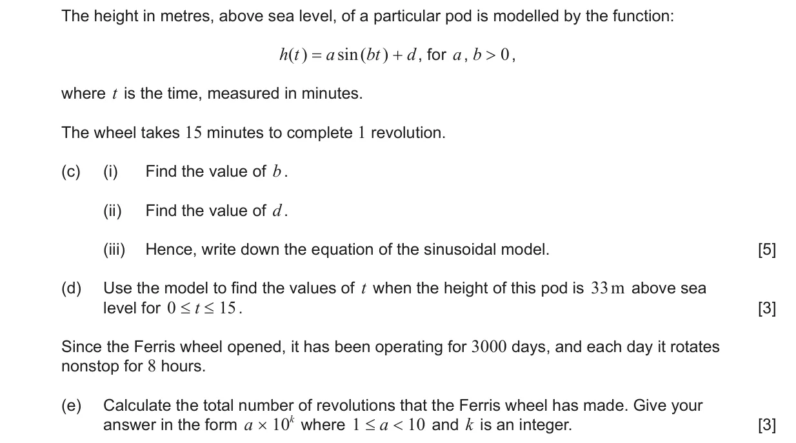
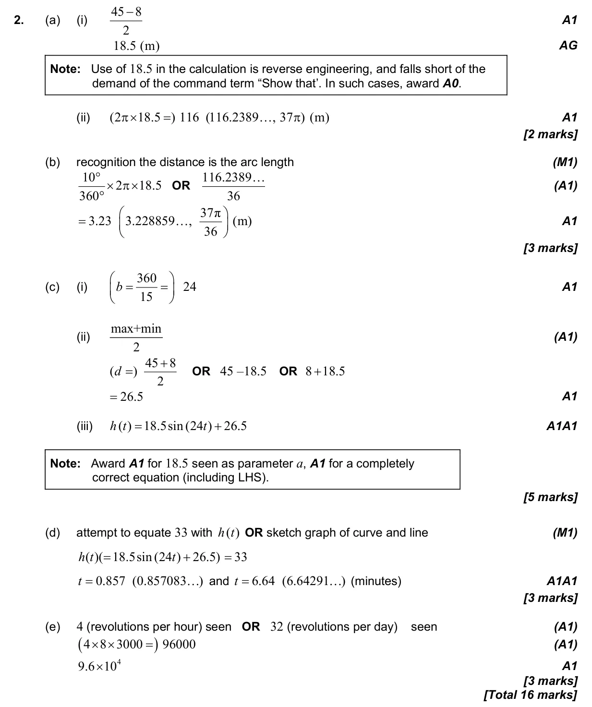

16 marks P2 TZ2 Calculator 2.5 Modelling with linear, quadratic, exponential, power, cubic and sinusoidal functions3.4 Arc length and sector area in degrees1.1 Scientific notation2.4 Key features of graphs Question Hide breakdown abcde Markscheme 